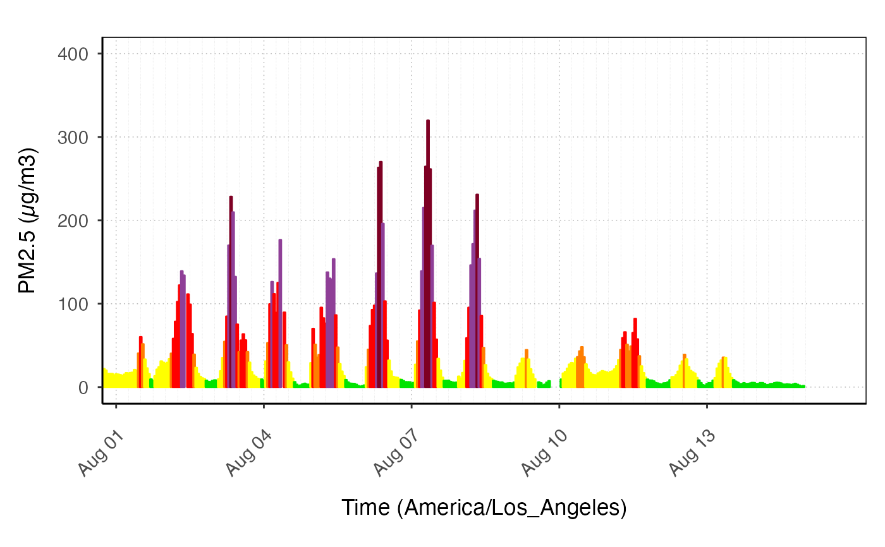

This function calculates the air quality categories for the data and colors the data by AQ cateogry when it is added to a plot. The default is to add them as bars.
stat_AQCategory(
mapping = NULL,
data = NULL,
mv4Colors = FALSE,
nowcast = TRUE,
geom = "bar",
position = "identity",
na.rm = FALSE,
show.legend = NA,
inherit.aes = TRUE,
...
)Set of aesthetic mappings created by aes(). If
specified and inherit.aes = TRUE (the default), it is combined with
the default mapping at the top level of the plot. You must supply
mapping if there is no plot mapping.
The data to be displayed in this layer. There are three options:
if NULL, the default, the data is inherited from the plot data. A
data.frame or other object, will override the plot data. A
function will be called witha single argument, the plot data. The
return value must be a data.frame, and will be used as the layer
data.
If TRUE, use the colors used in the monitoring v4
site. Otherwise, use the "official" AQI colors.
If TRUE, y values will be transformed using
stat_nowcast.
The geometic object to display the data
Position adjustment, either as a string, or the result of a call to a position adjustment function.
remove NA values from data
logical indicating whether this layer should be included in legends.
if FALSE, overrides the default aesthetics, rather
than combining with them. This is most useful for helper functions that
define both data and the aesthetics and shouldn't inherit behaviour from
the default plot specificatino, eg borders().
additional arguments passed on to layer(), such as
aesthetics.
ggplot_pm25Timeseries(
AirMonitor::Carmel_Valley,
startdate = 20160801,
enddate = 20160815
) +
stat_AQCategory()
#> Warning: Removed 242 rows containing missing values or values outside the scale range
#> (`geom_bar()`).

ggplot_pm25Timeseries(
AirMonitor::Carmel_Valley,
startdate = 20160801,
enddate = 20160805
) +
geom_line() +
stat_AQCategory(
geom = "point",
size = 2,
shape = 21,
color = 1
)
#> Warning: Removed 454 rows containing missing values or values outside the scale range
#> (`geom_line()`).
#> Warning: Removed 456 rows containing missing values or values outside the scale range
#> (`geom_point()`).